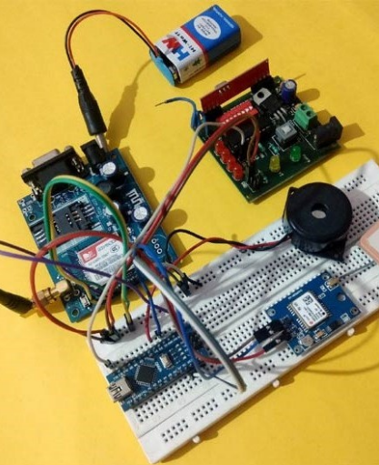

- Women safety is a very important issue due torising crimes against women these days. To help resolve this issue we propose a gps based women safety system.
- This system can be turned on by a woman in case she even thinks she would be in trouble
- Once the button is pressed, system now sends her location to the authorized personnel number through SMSmessage as a security measure and also sounds a buzzer continuously so that nearby people may realize the situation.
- This device will prove to be very useful in savinglives as well as preventing atrocities againstwomen.
- The device uses GPS sensor along with a gsm modem, LCD display, leds and microcontroller based circuit to achieve this system.
- We intend to create a partial wearable that can provide a complete securitysolution and become a utility that eases the apprehension among women and their family members.
- The objective is to create a safety system in the form of aportable safety device for women, that does the following task :Alerts family and police and gives location coordinates of the woman being attacked.

Introduction